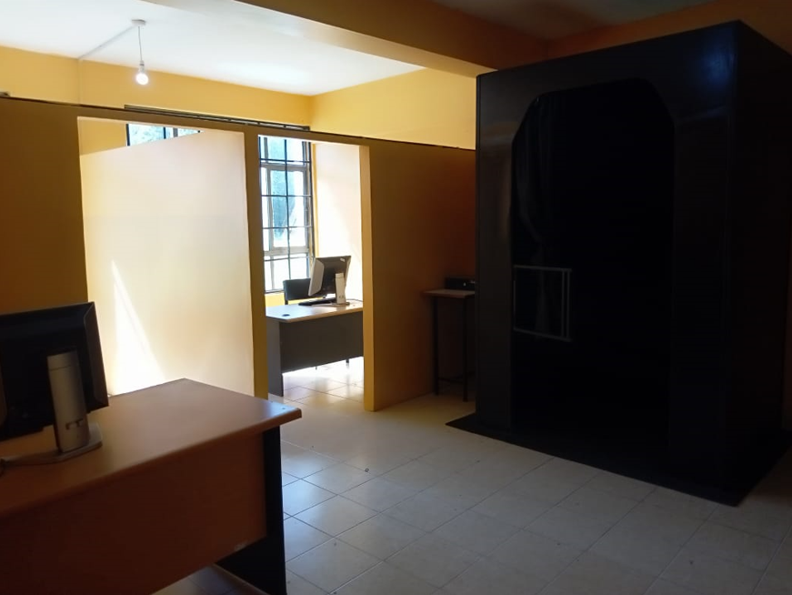

How Gift and Talent Assessment is done

There are “Standard and Advanced” test kits used to find out the ‘symptoms’ then preliminary tests are taken before making ‘confirmatory’ tests.
The confirmatory tests are completed through a Gift and Talent Test aided machine; a biometric machine that uses safe white light (not an x-ray machine) and used to produce Neural Body Models used by experts to confirm talents.
Steps in Gift and Talent Testing
First of all, find a centre for Gift and Talent Test near you and “Join The Programme”. Today Gift and Talent Test can be done remotely, thanks to the new “microchip” installed in special computers enabling it to seamlessly communicate with headquarters, hence geographical location does not matter.
Step 1: Oral Screening
Involves verbal chats to excite neutral domains and provide experts with “Inception Delimiters” of talent.
Step 2: Software Screening
Special Software with psycho – questions and evaluation tools to improve and confirm Step 1 Values
Step 3: Machine Screening
Biometric Machine Confirmatory Assessment to provide “body model” with “neutral channels” and bring “diametrics”.
Step 4: Expert Evaluation Reporting
Experts receive details of Step 1, 2, 3 and evaluate professionally and write reports detailing Learning Ability, Learning Products,
Assessment Styles, with further useful recommendations as talent and related potential gifts and career forecasts.
Step 5: Learning Prescription
A Learning Prescription is further produced for the candidate and this is used by educators to support the learning of the candidate with a
bias to Talent Development and Career Fulfillment.
Step 6: Admission and Support
Finally the candidate is registered for recommended programmes as per the prescription in step 5 above.
How long does it take to do a Gift and Talent Assessment?
It takes 30-40 minutes and results (reports) out within 24-48 hours.
How much does it cost to be assessed for Gifts and Talents?
You must join the programme and by “Joining The Programme” ( i.e being a member of The World Talent Federation) , you pay USD 10.00;
This allows you to have preliminary “Assessment Reviews & Talent ID “and attain discounted rates based on your location.
Assessment Fees depends on above “Preliminary Reviews & |Talent ID” that will tell us the extent of your needs.
It also depends on your membership status with us or our Affiliates.
Thus the fees below apply:
Step 1: Oral Screening – USD 50
Step 2: Psycho-Screening – USD 50
Step 3: Athropo-Biometric Screening – USD 100
Other Steps above will depend on the institution (Talent or Academic Clinic) you will register in.
This may include schools, colleges or universities that will be recommended as per your prescription.
Notes:
(a)Steps 1 and 2 are mandatory
(b) Step 3 may be recommended or desired based on “Preliminary Reviews & Talent ID”
(c) Amounts above depend on membership status. Members usually receive 50% discount while non-members pay the full amount.
There are those that may be fully sponsored based on earlier approved requests.